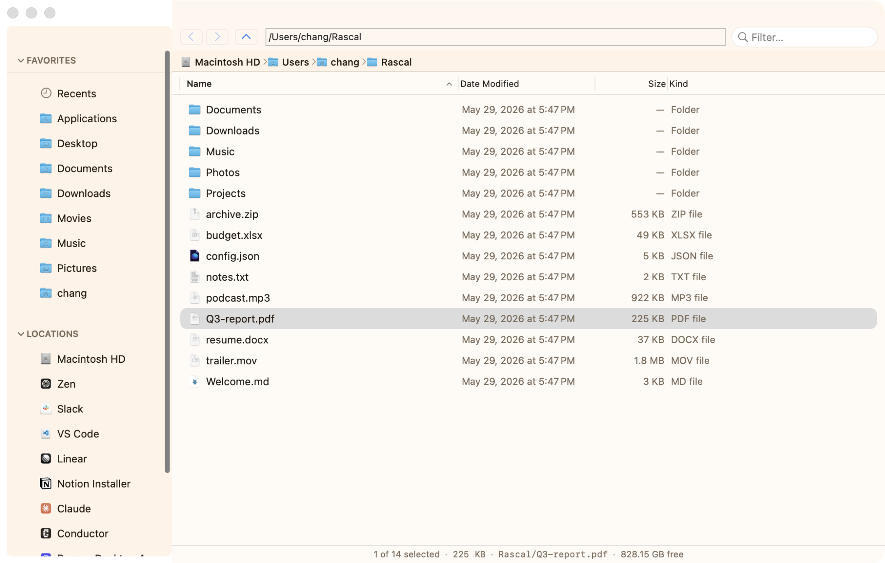
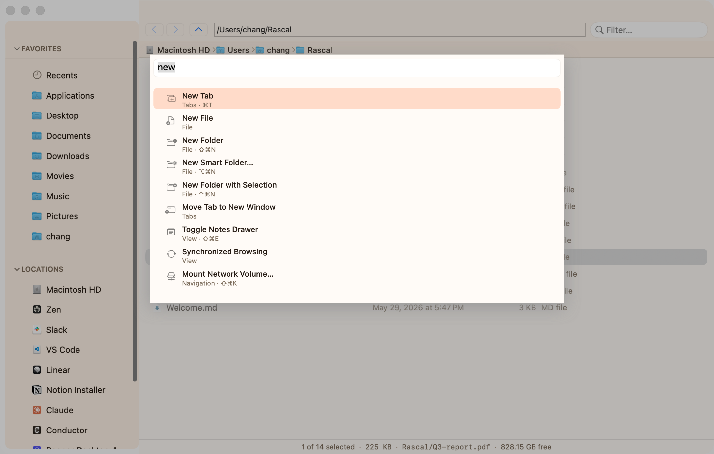
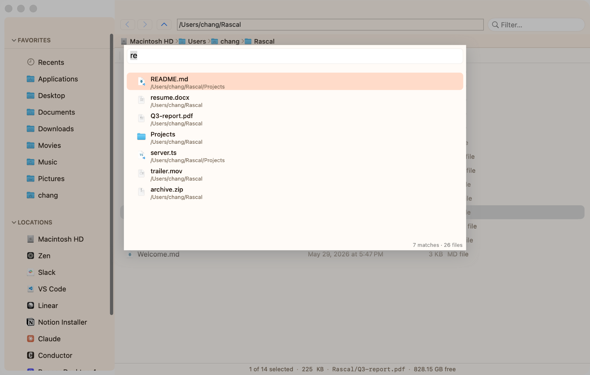
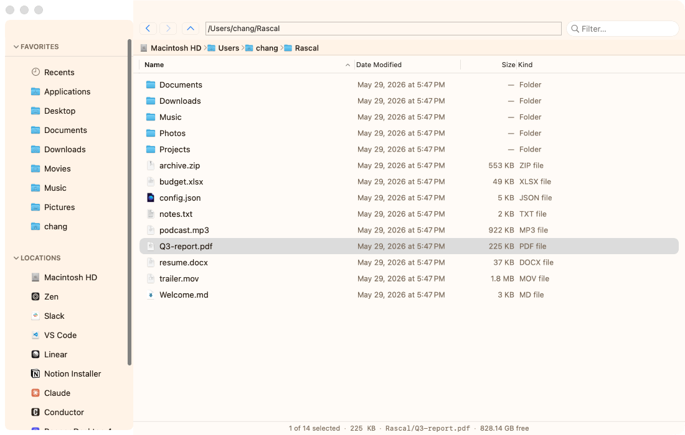
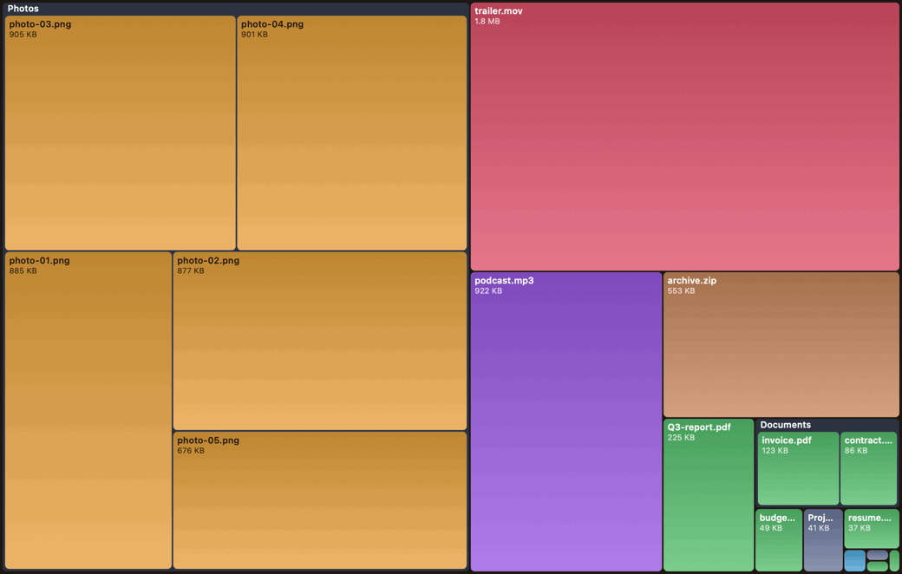

Keyboard-first
A fuzzy command palette (⌘⇧P) and real vim keys — hjkl, /, dd, gg. Drive the whole app without reaching for the mouse.
a native macOS file manager
A keyboard-first Finder replacement for people who live in their files — quick, scriptable, and entirely yours.

Local-first · no account · no telemetry · no AI · open source
Under the hood
A fuzzy command palette (⌘⇧P) and real vim keys — hjkl, /, dd, gg. Drive the whole app without reaching for the mouse.
Dual panes, tabs, and List / Icon / Column / Gallery. Lay files out the way you think, then switch in a keystroke.
A live, colour-coded treemap of any folder. Click a tile to dive in; the map redraws as you go.
Light, dark, and eight more — or write your own in a few lines of JSON. Every panel, down to the finders, obeys it.
Read and write real Finder tags, and pin saved searches to the sidebar as folders that keep themselves current.
No cloud, no account, no telemetry, no AI. Rascal opens instantly and your files never leave the machine.
A few seconds of Rascal

⌘⇧P
⌘F

No paywall, no upsell, no "pro" tier. If Rascal earns a spot in your dock, buying me a coffee is the whole business model.
Buy me a coffeeGet Rascal
Universal build for Apple Silicon & Intel. macOS 13 Ventura or later.
Download Rascal.dmgor build from source
git clone https://github.com/chang-07/finder-2.git
cd finder-2
./setup-signing.sh # once — so macOS remembers the permissions you grant
./install.sh # builds & installs to /Applications